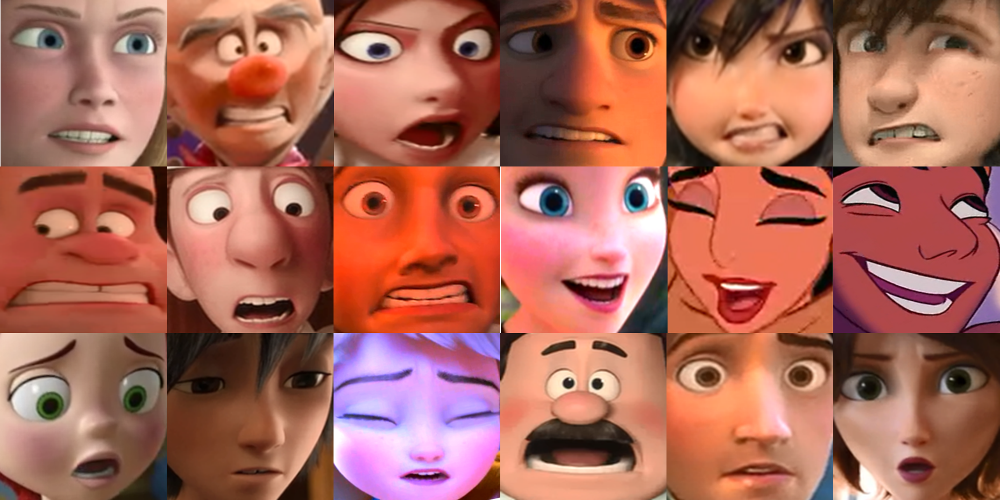

Publications
2022
 TomatoDet: Anchor-free Detector for Tomato DetectionFrontiers in Plant Science , 2022PDF Online BibTeX
TomatoDet: Anchor-free Detector for Tomato DetectionFrontiers in Plant Science , 2022PDF Online BibTeX@article{liu2022tomatodet, author = {Liu, Guoxu and Hou, Zengtian and Liu, Hongtao and Liu, Jun and Zhao, Wenjie and Li Kun}, title = {TomatoDet: Anchor-free Detector for Tomato Detection}, journal = {Frontiers in Plant Science}, volume = {13}, pages = {2725}, year = {2022}, url = {https://www.frontiersin.org/articles/10.3389/fpls.2022.942875/full}, issn = {1664-462X}, doi = {10.3389/fpls.2022.942875} }
2021
 Diseases Detection of Occlusion and Overlapping Tomato Leaves Based on Deep LearningFrontiers in Plant Science , 2021
Diseases Detection of Occlusion and Overlapping Tomato Leaves Based on Deep LearningFrontiers in Plant Science , 2021 Analysis of the performance of the multi-objective hybrid hydropower-photovoltaic-wind system to reduce variance and maximum power generation by developed owl search algorithmEnergy , 2021
Analysis of the performance of the multi-objective hybrid hydropower-photovoltaic-wind system to reduce variance and maximum power generation by developed owl search algorithmEnergy , 2021 A rational delegating computation protocol based on reputation and smart contractJournal of Cloud Computing: Advances, Systems and Applications , 2021
A rational delegating computation protocol based on reputation and smart contractJournal of Cloud Computing: Advances, Systems and Applications , 2021
2020
-
 YOLO-Tomato: A Robust Algorithm for Tomato Detection based on YOLOv3Sensors , 2020 (Best Paper Award)PDF Webpage News BibTeX
YOLO-Tomato: A Robust Algorithm for Tomato Detection based on YOLOv3Sensors , 2020 (Best Paper Award)PDF Webpage News BibTeX@article{liu2020yolo, author = {Liu, Guoxu and Nouaze, Joseph Christian and Touko, PhilippeLyonel and Kim, Jae Ho}, title = {YOLO-Tomato: A Robust Algorithm for Tomato Detection based on YOLOv3}, journal = {Sensors}, volume = {20}, number = {7}, pages = {2145}, year = {2020}, url = {https://www.mdpi.com/1424-8220/20/7/2145}, issn = {1424-8220}, doi = {10.3390/s20072145} } -
 Bioelectrical Impedance Spectroscopy (BIS) Monitoring of Lettuce during 19 HoursThe 8th International Symposium on Sensor Science (I3S) , 2020
Bioelectrical Impedance Spectroscopy (BIS) Monitoring of Lettuce during 19 HoursThe 8th International Symposium on Sensor Science (I3S) , 2020 -

Facial Expression Recognition of Animated Human CharactersInternational Conference on Machine Learning and Computing (ICMLC) , 2020PDF BibTeX@inproceedings{liu2020facial, author = {Liu, Guoxu and Jin, Hui and Jiang, Hailong and Kim, Jae Ho}, title = {Facial Expression Recognition of Animated Human Characters}, booktitle = {Proceedings of the 2020 12nd International Conference on Machine Learning and Computing}, pages = {313--317}, year = {2020} }
2019
-
 A Robust Mature Tomato Detection in Greenhouse Scenes Using Machine Learning and Color AnalysisInternational Conference on Machine Learning and Computing (ICMLC) , 2019
A Robust Mature Tomato Detection in Greenhouse Scenes Using Machine Learning and Color AnalysisInternational Conference on Machine Learning and Computing (ICMLC) , 2019 -
 Emotion Decision Method of A Situation-based for Emotion Study of Animation Lion King in FilmThe Journal of Image and Cultural Contents , 2019 (KCI)
Emotion Decision Method of A Situation-based for Emotion Study of Animation Lion King in FilmThe Journal of Image and Cultural Contents , 2019 (KCI)

2018
-
 A multidisciplinary analysis of the main actor's conflict emotions in Animation film's Turning PointKorea Science and Art Forum , 2018 (KCI)
A multidisciplinary analysis of the main actor's conflict emotions in Animation film's Turning PointKorea Science and Art Forum , 2018 (KCI)
2017
-
 Various Camera Motion Type Estimation of Animation SequencesConference of Korea Multimedia Society (KMMS) , 2017
Various Camera Motion Type Estimation of Animation SequencesConference of Korea Multimedia Society (KMMS) , 2017 -
 Study of SUVm Cut-off Value for the Distinction of Pancreatic Cancer In PET/CT ExamThe Journal of the Korea Contents Association , 2017 (KCI)
Study of SUVm Cut-off Value for the Distinction of Pancreatic Cancer In PET/CT ExamThe Journal of the Korea Contents Association , 2017 (KCI)